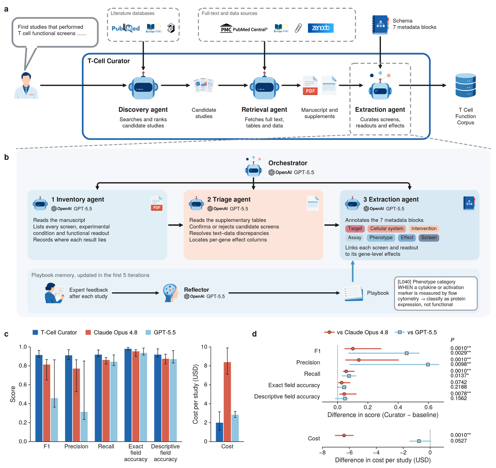
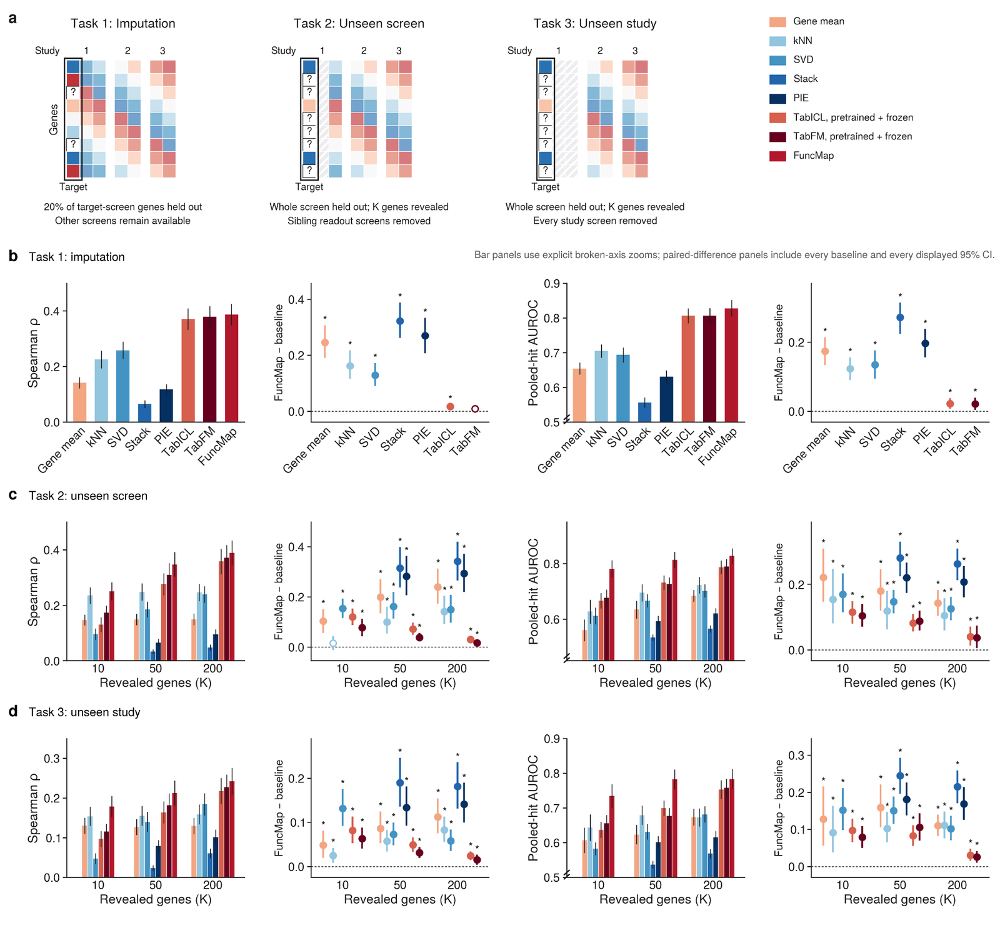

Transcriptional response is not functional outcome
Understanding how genetic perturbations affect cellular function is a central goal of T cell engineering, with direct implications for cancer therapeutics. Recent perturbation models have made real progress in predicting transcriptional responses — but a change in gene expression does not necessarily translate into proliferation, persistence, or cytotoxicity.
Learning those relationships has been limited by the absence of a unified functional screening dataset. Published studies remain scattered across heterogeneous supplementary tables, with inconsistent experimental annotations, phenotype definitions and effect-size conventions.
We introduce the T Cell Function Corpus, a standardized atlas of functional genetic perturbation screens assembled by an AI curation agent, and FuncMap, a tabular transformer that learns transferable relationships between perturbations and functional phenotypes across experimental contexts. Evaluated on held-out studies, FuncMap consistently outperformed statistical, machine-learning and single-cell foundation-model baselines at predicting perturbation effect rankings and identifying functional hits. With only a small number of measured genes from a new screen, it can predict effects for unmeasured perturbations — a practical way to extend focused experiments beyond their original scope.
A standardized atlas of functional screens
Conventional screening repositories organize genes, hit lists and broad phenotype annotations. Our framework instead represents each perturbation measurement through seven interconnected metadata blocks: target, cellular system, intervention, assay, phenotype, effect and screen.
Because functional T cell responses depend strongly on experimental context, the assay block captures stimulation conditions, timing of stimulation and harvest, culture environment, and the selection pressure applied during the experiment — distinguishing acute anti-CD3/CD28 activation from repeated stimulation, tumor co-culture, in vivo tumor challenge and immunosuppressive conditions. The effect block preserves the reported effect size, statistical significance, reference-control definition and analysis method, together with a standardized direction convention for whether a perturbation increases or decreases the measured phenotype.
Studies published between 2018 and 2026.
Screens and gene-level effects by species, antigen receptor, perturbation modality and library scale. Switch between counts above; hover a segment for its share. CRISPR nuclease loss-of-function dominates the effect counts, while focused libraries dominate the screen counts.
These outcomes were interrogated under diverse conditions — tumor challenge (45 assays), marker-based sorting (44), chronic stimulation (28), proliferation-based selection (26), in vivo trafficking (12), activation (8), infection (8) and immunosuppression (6). Preserving those contexts alongside the readouts is what distinguishes proliferation under acute activation from sustained expansion or persistence during repeated antigen exposure.
Compared with BioGRID ORCS. Among 37 PubMed-indexed publications, 30 studies and roughly 94 screens were absent from ORCS, which also lacked 12 of 34 assay instances from overlapping studies — including eight in vivo tumor and spleen readouts.
Our corpus captures 33 metadata dimensions against 16, and across 25 shared screens distinguishes nine specific functional readouts (IL-2, IFN-γ and TNF production among them) where ORCS has two broad categories. Where the two overlap, quantitative effects agree essentially perfectly: Spearman ρ ≥ 0.9999 in 25 of 25 screens.
Coverage against BioGRID ORCS, the largest existing screen repository. Red is this corpus; grey is ORCS; the right-hand figure is the ratio.
An agent that reads the literature
To build the corpus at scale we developed T-Cell Curator, an AI agent that extracts and standardizes metadata and quantitative perturbation effects directly from publications and their supplementary materials. A discovery agent searches for relevant studies, a retrieval agent collects manuscripts and associated materials, and an extraction agent performs the extraction, using the schema as its manual.
The extraction workflow is a multi-agent system coordinated by a GPT-5.5 orchestrator across three stages. An inventory agent examines the manuscript to identify all reported screens, experimental conditions and functional readouts. A triage agent examines the corresponding supplementary tables to confirm or reject candidate screens, resolve discrepancies between manuscript and data, and locate quantitative measurements. An extraction agent then annotates the seven metadata blocks and links each screen and readout to its gene-level effects. During the first five iterations, expert feedback was reviewed by a reflection agent that converted recurring errors into reusable guidelines, accumulated in a shared playbook and folded into later extraction prompts.

| System | Screen F1 | Precision | Recall | Field accuracy | Cost / paper |
|---|---|---|---|---|---|
| T-Cell Curator | 0.915 | 0.911 | 0.919 | 98.0% | $2.00 |
| Claude Opus 4.8 | 0.814 | 0.771 | 0.862 | 95.3% | $8.39 |
| GPT-5.5 | 0.459 | 0.315 | 0.843 | 93.7% | $2.84 |
Benchmark of 10 publications, 49 screens and 113 readout records curated by a human expert. Paired study-level differences in F1 favour the Curator against both Opus (P = 0.0010) and GPT-5.5 (P = 0.0029), as do precision and recall; exact-field accuracy differences are not significant (P = 0.074 and 0.219). The cost saving is significant against Opus (P = 0.0010) but not GPT-5.5 (P = 0.053). Descriptive free-text recovery by LLM-as-judge: 91.9% against 87.5% and 87.1%.
FuncMap
FuncMap is a tabular transformer that learns from functional perturbation measurements across diverse experimental contexts, integrating three sources of information: gene-level effects from previously published screens, experimental metadata describing the target screen, and external biological knowledge about each gene.
A screen encoder represents experimental conditions — organism, perturbation modality, antigen receptor, selection pressure, functional readout. A gene-knowledge encoder integrates gene descriptions, Gene Ontology annotations, protein sequences, interaction networks and genetic dependency data. These representations combine with previously measured effects in a tabular transformer that uses row–column attention to learn relationships across genes and screens. An in-context transformer then lets unmeasured genes attend to a small set of genes with known effects in the target screen, adapting predictions to the new setting.
To separate shared genetic effects from context-specific responses, each prediction decomposes into a donor prior, estimated from the gene's effects in related screens, and a predicted deviation learned by the transformer. Together these produce signed effect predictions and functional hit scores.

Results
We benchmarked FuncMap against baselines spanning three approaches: a statistical gene-mean baseline, conventional machine learning (k-nearest neighbors, SVD), single-cell foundation models (Stack, PIE), gradient boosting fitted within each screen (CatBoost), a transformer trained on our corpus (AssayFormer) and pretrained tabular foundation models used frozen (TabICL, Kumo). Performance is assessed by Spearman correlation between predicted and measured gene effects, and AUROC for distinguishing significant functional hits. Every setting was run five times, with a new seed and a new draw of revealed genes or folds each time.
Three tasks of increasing difficulty
- Imputation — recover held-out gene effects within a partially observed screen, using the remaining genes and other available screens.
- Unseen screen — only K measured genes are revealed, and related readouts from the same study are excluded from the reference data.
- Unseen study — all screens from the target publication are excluded, with K revealed genes to guide prediction.
Mean of five runs; black lines are the s.d. over runs and the open dots the five individual runs. The right-hand column gives FuncMap minus that baseline: ★ marks q < 0.05 and ▲ a baseline significantly ahead of FuncMap. Hover or tab through a row for the paired difference, its 95% bootstrap interval and q. Drawn live from the paper’s Source Data.
The figure as it appears in the paper

Figure 4. (a) The three evaluation tasks; schematic colours are illustrative. (b–d) Spearman correlation of the signed effect and pooled-hit AUROC for imputation (b), unseen screens (c) and unseen studies (d), with 10, 50 or 200 revealed genes in c and d. Bars show the mean of five runs and black lines the s.d. over runs. Difference panels show FuncMap minus each baseline with percentile 95% intervals from 20,000 study bootstraps; filled markers denote q < 0.05 (paired sign-flip test over studies, Benjamini–Hochberg across 111 contrasts). Y axes are broken, so bar heights are not comparable between values of K.
| Task | Setting | Spearman ρ | Hit AUROC | Strongest baseline |
|---|---|---|---|---|
| Imputation | 20% held out | 0.387 | 0.829 | Kumo 0.387 / 0.809 |
| Unseen screen | K = 200 | 0.392 | 0.829 | Kumo 0.383 / 0.806 |
| Unseen study | K = 200 | 0.244 | 0.785 | Kumo 0.233 / 0.768 |
Mean of five runs. Across the 111 paired comparisons in Figure 4, FuncMap was significantly ahead in 109 and no baseline was significantly ahead. The two exceptions are imputation Spearman ρ, where FuncMap and Kumo tie (unshaded above), and unseen-screen ρ at K = 10 against kNN. On imputation, Stack and PIE — both trained on transcriptomes — fell below the gene-mean baseline, suggesting that representations optimized for transcriptional response do not necessarily capture what matters for downstream cellular function.
In the unseen-screen task, FuncMap had the highest mean Spearman ρ and hit AUROC at every tested anchor count. Its AUROC margin over the next-best method was largest when few genes were revealed (0.763 against 0.710 for CatBoost at K = 10) and narrowed as more measurements became available. With 200 measured genes it reached ρ = 0.392 and AUROC = 0.829 — matching its imputation performance despite exclusion of the target screen and its same-readout siblings. A focused screen of a few hundred genes can therefore support prediction across a much larger set of unmeasured perturbations.
Direction matters
Knowing whether a perturbation increases or decreases the measured phenotype is essential for interpreting it. A researcher may want knockouts that raise cytokine production, or lower an exhaustion marker; a useful model must distinguish the direction of an effect, not merely identify genes that affect the phenotype.
FuncMap's largest advantage was in identifying enriched hits: on imputation its enriched-hit AUROC was 0.824 against 0.700 for Kumo, the strongest baseline, and the gap held when whole screens or studies were excluded — 0.824 against 0.702 for unseen screens and 0.757 against 0.663 (AssayFormer) for unseen studies, both at K = 200. In an unseen screen with 200 measured genes, its top 50 predictions recovered 38.5% of enriched hits against 31.3% for Kumo.
Enriched and depleted hits are ranked separately. Mean of five runs with s.d.; switch direction, task, revealed-gene count and metric above. Hover a row for the paired study-level difference against FuncMap. Drawn live from the paper’s Source Data.
The figure as it appears in the paper

Figure 5. Direction-specific hit ranking across the three evaluation tasks, in five repeated runs. (a) Imputation within a screen (Task 1). (b) Unseen screen (Task 2). (c) Unseen study (Task 3). Top rows, enriched hits; bottom rows, depleted hits. FuncMap's enriched score is its enriched expert and its depleted score is the negative of the backbone's signed prediction. Baselines use the two orientations of their signed prediction, except AssayFormer, whose enriched and depleted rankings are separate passes with an "increases" or "decreases" phenotype description. Each run gives a study-equal mean (assays averaged within families, families within studies; n = 20-21 studies). Bars show the mean of the five runs and black lines the s.d. over the five runs. The runs are the original benchmark run plus four with a new seed and a new random draw of the revealed genes (Tasks 2-3) or folds (Task 1); the FuncMap backbone was trained once and is shared by all runs, and the enriched expert is re-trained in every run. AUROC and average precision are calculated among genes with a known direction label. Precision@50 is the lower-bound precision among the top 50 genes, with unlabelled genes kept in the denominator; Recall@50 is the fraction of all confirmed hits of that direction found in the top 50. Stack and PIE have no value at K = 10. A double slash marks axes that start above zero. Paired study-level tests of FuncMap against every baseline are given in the Source Data.
From a focused in vivo screen to a genome-wide prediction
In vivo perturbation screens commonly rely on small, manually curated libraries, because genome-wide screening in animals remains technically challenging and resource intensive — one abundance screen alone required 22 tumor-bearing mice. Liu et al. developed the first genome-wide in vivo CRISPR screens in human T cells, giving a stringent held-out validation set. We emulated the practical setting against it: for each assay, FuncMap received measured effects for 200 genes and predicted effects for roughly 11,200 unmeasured ones.
Across the four assays and five runs it ranked enriched hits more accurately than all nine comparison methods, with a mean AUROC of 0.881 and average precision 0.118. It also had the highest mean hit-weighted depleted-hit AUROC, at 0.932.

What this suggests
The ultimate goal of genetic perturbation studies is not simply to understand how genes regulate one another, but to identify interventions that produce meaningful changes in cellular function. In immunotherapy the therapeutic benefit of engineered T cells depends on their ability to proliferate, persist, recognize tumors and eliminate malignant cells. Decades of functional screening have generated extensive experimental evidence, but it remains scattered, with inconsistent annotations and effect conventions that make it hard to integrate.
AI agents offer a scalable way to turn that fragmented literature into training data. The T Cell Function Corpus preserves not only perturbation effects but the experimental conditions needed to interpret them — particularly important for functional screens, where the same gene can behave differently depending on cell type, modality, stimulation and measured phenotype.
Combinatorial nomination is a natural extension, and a harder one. Our current strategy ranks candidate gene pairs by combining predicted individual effects with the similarity of their FuncMap embeddings, which prioritizes combinations from a large search space using existing single-gene data. But the assumption that strong individual effects and functional dissimilarity predict beneficial combinations is a simplification: genetic interactions can be synergistic, antagonistic or compensatory in ways that single perturbations do not reveal. Expanding the corpus to large-scale combinatorial screens is the path to models that predict true genetic synergy.
Data and code
The T Cell Function Corpus, the curation schema and FuncMap training and evaluation code are released for research use.
- Corpus download — standardized screens, assay instances and gene-level effect tables with full metadata.
- Metadata schema — the seven-block schema and direction conventions used by the curation agent.
- FuncMap — model code, weights and benchmark reproduction scripts.
Correspondence to jamesz@stanford.edu and troth@stanford.edu.
Citation
@article{mao2026tcellfunction,
title = {Predicting T-cell Function beyond Transcriptome},
author = {Mao, Yuncong and Dann, Emma and Zou, Jiaru and Zhang, Harrison and
Wu, Sean and Hartman, Austin and Marson, Alexander and
Prichard, Jonathan and Choi, Yejin and Roth, Theo and Zou, James},
year = {2026},
url = {https://yuncongmao.github.io/t-cell-function-corpus/}
}